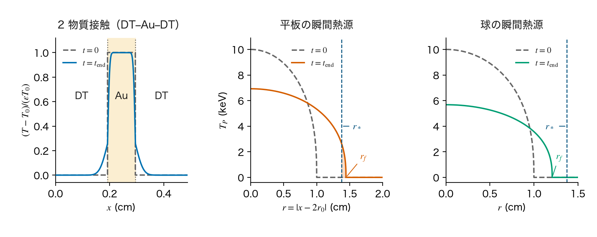
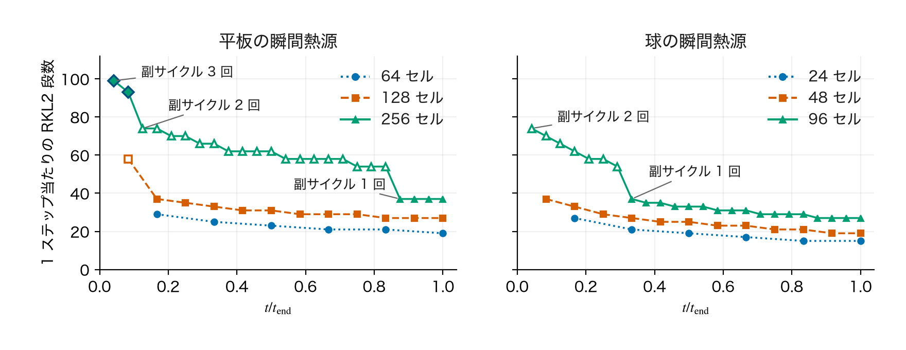
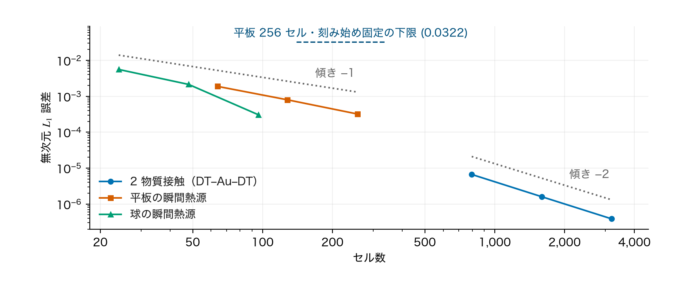

1D 熱伝導の解析解による検証 reference
要旨
解析解をもつ 3 つの標準問題で、一次元の電子熱伝導ソルバ（段ごとの係数評価を行う 2 次 Runge–Kutta–Legendre スーパータイムステッピングと、幅重み付き調和平均による Kirchhoff 割線面伝導率）を検証した。2 物質接触（DT–Au–DT）の線形極限では、セル幅比 4 の物質界面をまたぐ空間 2 次収束を確かめ、観測収束次数（observed order of convergence）は 2.06 および 2.05 であった。平板と球の Barenblatt–Pattle 瞬間熱源では、陽的安定限界の最大 800 倍の時間刻みで非線形熱波面の伝播を比較し、3 問すべてが合格した。平板の観測収束次数は 1.24 および 1.31 であり、最細格子の誤差 3.21 × 10−4 は、係数を刻みの始めに固定する旧方式の理論下限 0.0322 を約 2 桁下回った。球の観測収束次数は 1.38 および 2.81 で下限 0.75 を満たしたが、2 つの次数の開きが大きく、3 格子では漸近領域に入っていないと見られる。
はじめに
1D の電子熱伝導は、既定では局所 Spitzer–Härm（SH）伝導率と調和型の流束制限を保存型の有限体積法で離散化し、2 次 Runge–Kutta–Legendre（RKL2）スーパータイムステッピング（super-time-stepping、STS）[1、pp. 600–602] で時間発展させる。不均一なセル幅を挟む物質界面での熱流束の連続性には、幅重み付き調和平均による面の基底係数と Kirchhoff 割線（secant）が効く [2、p. 27、式 (28)–(29)]。一方、急峻な非線形熱波面が 1 時間刻みに複数のセルを進む領域では、係数を刻みの始めに固定するか段ごとに評価し直すかが波面の到達距離を直接左右する [10、p. 111、式 (29)–(31)；14、p. 46、§8.7]。
これら 2 つの側面を切り分けて確かめるため、2 物質接触の線形拡散問題と、平板および球対称の Barenblatt–Pattle 瞬間熱源 [5、p. 408、式 (3)–(6)] の計 3 問を用いる。2 物質接触問題は DT と金（Au）の界面を挟む幅比 4 の格子で空間 2 次収束を検査する。平板と球の瞬間熱源は、Spitzer 伝導率の \(T^{5/2}\) 非線形性による有限速度の熱波面を大きな時間刻みで進め、特に平板の瞬間熱源が、係数を刻みの始めに固定する方式と段ごとに評価する方式を理論的な誤差下限で分離する。
計算の設定
3 問はいずれも 1 温度（1T）理想気体（比熱比 \(\gamma=5/3\)）と固定電離度 \(\bar Z\) を用い、流体運動・輻射輸送・レーザー・核燃焼を無効にしたうえで通常の 1D ドライバから電子熱伝導だけを実行する。Spitzer–Härm 伝導率には Epperlein–Short の \(Z\) 依存補正 \(\xi(Z)\) を含む TENRYU の標準式を用いる [3、p. 977；4、p. 3092]。1T 理想気体の単位体積あたりの熱容量は \(\rho c_v=\rho(1+\bar Z)k_B/[(\gamma-1)Am_p]\) である。ここで \(\rho\) は質量密度、\(c_v\) は比熱、\(A\) は原子量、\(m_p\) = 1.6726219 × 10−24 g は陽子質量、\(k_B\) = 1.6022 × 10−12 erg/eV は eV から erg への換算定数である。
| 項目 | 値 |
|---|---|
| 温度モデルと状態方程式 | 1 温度モデル（1T）、理想気体（\(\gamma=5/3\)）、固定電離度（zbar.model="fixed"）。他の物理過程（流体・輻射・レーザー・核燃焼）は無効 |
| 電子熱伝導ソルバ | 既定の 1D STS（solver="sts"、段ごとの係数評価による RKL2）、face_kappa_policy="kirchhoff_same_material"、f_lim=0.06 |
| STS 制御キー | cfl_cond=0.25、sts_max_stages=40、sts_subcycle_eta=0.9、sts_bound_margin=0.1、sts_bound_retries_max=4 |
| 境界条件と時間進行 | 領域の両端は零熱流束（断熱）。通常の 1D ドライバで一定の目標時間刻みを指定して \(t_{\rm end}\) まで進める |
2 物質接触問題では、低温の重水素・三重水素（DT、\(T_0\) = 100 eV）の 2 層で高温の金（Au、\(T_0(1+\varepsilon)\)、\(\varepsilon\) = 10−6）の中央層を挟む平板領域を考える。DT と Au の密度比 4（\(\rho_{\rm Au}/\rho_{\rm DT}=4\)）に合わせてセル幅比を 4（\(w_{\rm DT}/w_{\rm Au}=4\)、全セルで質量一定）とし、伝導率比 10.80（\(\kappa_{\rm DT}/\kappa_{\rm Au}\)）の界面における幅重み付き調和平均の精度を測る。基準セル幅 \(h_0\) = 2 × 10−3 cm に対し、DT 側の拡散長さを \(\ell_{\rm DT}=16h_0\) = 0.032 cm と定め、終了時刻を \(t_{\rm end}=\ell_{\rm DT}^2/(4\alpha_{\rm DT})\) = 5.72818 × 10−7 s とする。この時刻での Au 側の拡散長さは \(\ell_{\rm Au}\) = 8.5597 × 10−3 cm である。左右の DT 層は各 0.192 cm（6 \(\ell_{\rm DT}\)、セル数 96·2k）、中央の Au 層は 0.103 cm（セル数 206·2k、全長 0.487 cm）であり、外端での補誤差関数の裾は \(\operatorname{erfc}(6)\) ≈ 2 × 10−17 と倍精度丸め未満に収まる。格子水準は \(k\) = 1, 2, 3 とし、時間刻みを \(\Delta t_k=t_{\rm end}/(16\cdot 4^k)\)（\(\Delta t\propto h^2\)）で細かくする。
平板および球の Barenblatt–Pattle 瞬間熱源では、高密度の 1T DT（\(\rho\) = 107 g/cm3、\(A\) = 2.5、\(\bar Z\) = 1、電子数密度 \(n_e\) = 2.3915 × 1030 cm−3）を用いる。この高密度では \(T\) ≤ 4.3 × 105 eV の全域でクーロン対数が下限 \(\ln\Lambda\) = 2 に固定されるため、伝導率は厳密なべき乗則 \(\kappa=\kappa_0 T^{5/2}\)（\(\kappa_0\) = 1.53 × 109 erg/(s cm eV7/2)）となる。初期波面半径を \(r_0\) = 1 cm、初期中心温度を \(T_{c0}\) = 104 eV とすると、基準熱拡散率は \(D_0=\kappa_0 T_{c0}^{5/2}/(\rho c_v)\) = 1.33104 cm2/s である。初期状態は解析解のセル平均を温度の床 \(T_{\rm floor}\) = 10−3 eV で下から切り上げた値とし、1 ステップ目から 1T の全熱容量が使われるよう比熱 \(c_{v,e}\) に 1T の値をあらかじめ与える。格子水準は \(k\) = 0, 1, 2（等間隔セル幅 \(h_k=r_0/(16\cdot 2^k)\)）とし、時間刻みを \(\Delta t_k\propto h_k\) で細かくする。この選び方により、初期の瞬間波面クーラン数（front-CFL number、初期の瞬間波面速度 \(\dot r_f(0)\) を \(\Delta t_k/h_k\) 倍した無次元数）\(C_f=\dot r_f(0)\Delta t_k/h_k\) が全格子で一定に保たれる [10、p. 111、式 (29)–(31)]。
| 問題 | 幾何と領域 | 材料・密度・物性 | 時刻と終端状態 | 細分化則と格子（セル数 / ステップ数） |
|---|---|---|---|---|
| 2 物質接触（DT–Au–DT） | 平板、[0, 0.487] cm（界面 \(x_L\) = 0.192 cm、\(x_R\) = 0.295 cm、\(w_{\rm DT}/w_{\rm Au}=4\)） | DT: \(A\) = 2.5、\(\bar Z\) = 1、\(\rho\) = 0.25 g/cm3、\(\ln\Lambda\) = 2.3826、\(\kappa_{\rm DT}\) = 1.2843 × 1014 erg/(s cm eV)、\(\alpha_{\rm DT}\) = 446.91 cm2/s。 Au: \(A\) = 197、\(\bar Z\) = 50、\(\rho\) = 1.0 g/cm3、\(\ln\Lambda\) = 2.0、\(\kappa_{\rm Au}\) = 1.1895 × 1013 erg/(s cm eV)、\(\alpha_{\rm Au}\) = 31.977 cm2/s |
\(T_0\) = 100 eV、\(\varepsilon\) = 10−6、\(t_{\rm end}\) = 5.72818 × 10−7 s、界面比 \(\theta\) = 0.25719 | \(\Delta t\propto h^2\)（\(k\) = 1, 2, 3） 796 / 64 1,592 / 256 3,184 / 1,024 |
| 平板の瞬間熱源 | 平板、[0, 4] cm（中心 \(x=2r_0\) = 2 cm、\(r=|x-2r_0|\)） | DT: \(A\) = 2.5、\(\bar Z\) = 1、\(\rho\) = 107 g/cm3、\(\ln\Lambda\) = 2、\(\kappa_0\) = 1.53 × 109 erg/(s cm eV7/2)、\(\rho c_v\) = 1.1495 × 1019 erg/(cm3 eV) | \(t_0\) = 0.208692 s、\(t_{\rm end}\) = (135/32)\(t_0\) = 0.880420 s、\(r_f\) = 1.44364 cm、\(T_c\) = 6926.93 eV、初期 \(C_f\) = 2.5 | \(\Delta t\propto h\)（\(k\) = 0, 1, 2） 64 / 6 128 / 12 256 / 24 |
| 球の瞬間熱源 | 球対称、[0, 1.5] cm（中心 \(r\) = 0） | 平板の瞬間熱源と同じ高密度 DT（\(\ln\Lambda\) = 2、\(D_0\) = 1.33104 cm2/s） | \(t_0\) = 0.0988542 s、\(t_{\rm end}\) = 5\(t_0\) = 0.494271 s、\(r_f\) = 1.20757 cm、\(T_c\) = 5678.95 eV、初期 \(C_f\) = 1.404 | \(\Delta t\propto h\)（\(k\) = 0, 1, 2） 24 / 6 48 / 12 96 / 24 |

解析解
2 物質接触（DT–Au–DT）
摂動振幅 \(\varepsilon\) = 10−6 の極限では、各材料内の熱伝導率 \(\kappa_m\) と熱拡散率 \(\alpha_m=\kappa_m/(\rho c_v)_m\) は \(T_0\) = 100 eV での定数とみなせる。界面 \(x_L\)、\(x_R\) で温度と熱流束が連続であるという条件から、左右の DT 層および中央の Au 層の解析解 \(T_{\rm ex}(x,t)\) は次式で与えられる。
$$ \begin{aligned} \theta &= \frac{\kappa_{\rm Au}\sqrt{\alpha_{\rm DT}}}{\kappa_{\rm Au}\sqrt{\alpha_{\rm DT}}+\kappa_{\rm DT}\sqrt{\alpha_{\rm Au}}}, \qquad \ell_{\rm DT}=2\sqrt{\alpha_{\rm DT}t}, \qquad \ell_{\rm Au}=2\sqrt{\alpha_{\rm Au}t},\\ \frac{T_{\rm ex}(x,t)-T_0}{\varepsilon T_0} &= \begin{cases} \theta\,\operatorname{erfc}\!\left(\dfrac{x_L-x}{\ell_{\rm DT}}\right) & (x\le x_L),\\[8pt] 1-(1-\theta)\left[\operatorname{erfc}\!\left(\dfrac{x-x_L}{\ell_{\rm Au}}\right) +\operatorname{erfc}\!\left(\dfrac{x_R-x}{\ell_{\rm Au}}\right)\right] & (x_L\lt x\lt x_R),\\[8pt] \theta\,\operatorname{erfc}\!\left(\dfrac{x-x_R}{\ell_{\rm DT}}\right) & (x\ge x_R). \end{cases} \end{aligned} $$ここで \(\theta\) = 0.25719 は界面での無次元温度、\(\ell_{\rm DT}\) と \(\ell_{\rm Au}\) は時刻 \(t\) における各材料の熱拡散長さ、\(\operatorname{erfc}\) は相補誤差関数（complementary error function）である。中央の Au 層の厚さは 12 \(\ell_{\rm Au}\) を超え、両側の DT 層の厚さは 6 \(\ell_{\rm DT}\) である。したがって左右の界面どうしの干渉および領域外端での反射は \(\operatorname{erfc}(6)\) ≈ 2 × 10−17 であり、また \(\kappa\propto T^{5/2}\) の非線形性による線形解からのずれは \(O(\varepsilon)\) として無視できる。
平板および球の Barenblatt–Pattle 瞬間熱源
定数 \(\rho c_v\) とべき乗則の伝導率 \(\kappa=\kappa_0 T^n\)（\(n\) = 5/2）に対する \(d\) 次元対称の非線形拡散方程式 \(\partial T/\partial t=r^{1-d}\partial_r[r^{d-1}D(T)\partial_r T]\)（\(D(T)=\kappa_0 T^n/(\rho c_v)\)）は、有限の台（compact support）をもつ自己相似解（Barenblatt–Pattle 解）をもつ [5、p. 408、式 (3)–(6)]。
$$ \begin{aligned} t_0 &= \frac{r_0^2\,n}{2D_0(dn+2)},\qquad \tau = 1+\frac{t}{t_0},\qquad \beta = \frac{1}{dn+2},\\ r_f(t) &= r_0\,\tau^{\beta},\qquad T_c(t) = T_{c0}\,\tau^{-d\beta},\qquad T_P(r,t) = T_c(t)\left[1-\frac{r^2}{r_f(t)^2}\right]_+^{1/n}. \end{aligned} $$ここで \(d\) = 1 が平板、\(d\) = 3 が球対称であり、\([\cdot]_+=\max(\cdot,0)\) は正の部分を表す。\(t_0\) は基準時間尺度、\(\tau\) は無次元時刻、\(\beta\) は相似指数（平板で 2/9、球で 2/19）、\(r_f(t)\) は波面半径、\(T_c(t)\) は中心温度である。\(n\) = 5/2 > 1 のため、温度分布は波面 \(r\to r_f^-\) で \((r_f-r)^{2/5}\) の特異性をもち、温度勾配 \(\partial_r T_P\) は波面で発散する一方、熱流束 \(-\kappa_0 T_P^{5/2}\partial_r T_P\) は 0 へ連続につながる [5、p. 408]。
波面の非滑らかさを正確に扱うため、参照解はセル点値ではなく解析解の厳密なセル体積平均 \(\bar T_{P,i}=V_i^{-1}\int_{{\rm cell}\,i}T_P\,\mathrm dV\) とする。各セルの積分には 16 点の Gauss–Legendre 求積を用いる。波面を含むセルとその内隣のセルでは、変数変換 \(1-r^2/r_f^2=z^5\) を施して \((r_f-r)^{2/5}\) の特異性を滑らかな被積分関数 \(z^6(1-z^5)^{\pm 1/2}\) に変換したうえで積分する。同じ計算を 8 点求積でも行い、体積重み付き差の総和を総熱量 \(Q_k=\sum_i V_i\bar T_{P,i}\) で割った値 \(s_{{\rm ref},k}\) を参照求積の誤差推定値とする。記録した全格子で \(s_{{\rm ref},k}\) ≤ 9.45 × 10−14 であり、測定誤差より 10 桁以上小さい。
数値試験の初期条件では、解析解が 0 となる領域に温度の床 \(T_{\rm floor}\) = 10−3 eV を入れるため、初期状態と解析解のあいだにわずかなモデル差 \(E_{F,{\rm initial}}\) = 1.22 × 10−7（平板）および 3.68 × 10−7（球）が生じる。また、高密度 \(\rho\) = 107 g/cm3 のため自由飛行の流束上限 \(q_{\max}\) が拡散流束より十分大きく、流束制限はこの問題では実質的に働かない（なお、流束制限を含む縮退拡散方程式自体が \(L_1\) 縮小性をもつことが知られている [12、pp. 1152–1153、式 (3)・(7)；13、p. 375、Thm. 4.5]）。
比べる量と判定
2 物質接触問題では、セル中心 \(x_i=(x_{i-1/2}+x_{i+1/2})/2\) で評価した解析解 \(T_{\rm ex}(x_i,t_{\rm end})\) に対するセル幅重み付きの \(L_1\) 誤差を、初期摂動振幅 \(\varepsilon T_0\) と領域全幅 \(\sum_i w_i\) で割って無次元化する。一方、平板および球の瞬間熱源では、体積重み付き \(L_1\) 誤差による収束評価の慣例 [6、p. 10、§6.3、Table 1]（同文献はセル中心値と比較）に倣いつつ、波面の特異性によるサンプリング偏りを避けるため厳密セル平均 \(\bar T_{P,i}\) に対する誤差を総熱量 \(Q_k=\sum_i V_i\bar T_{P,i}\) で割って無次元化する。
$$ \begin{aligned} E_k &= \frac{\sum_i w_i\,|T_i-T_{\rm ex}(x_i,t_{\rm end})|}{\varepsilon T_0\sum_i w_i} && \text{（2 物質接触）},\\ E_{F,k} &= \frac{\sum_i V_i\,|T_i-\bar T_{P,i}(t_{\rm end})|}{Q_k}, \qquad Q_k = \sum_i V_i\,\bar T_{P,i}(t_{\rm end}) && \text{（平板・球の瞬間熱源）}. \end{aligned} $$ここで \(w_i\) と \(V_i\) はそれぞれセル \(i\) の幅と体積（平板では \(V_i=w_i\)、球では \(V_i=\frac{4\pi}{3}(r_{i+1/2}^3-r_{i-1/2}^3)\)）、\(T_i\) は終了時刻での計算温度である。瞬間熱源ではさらに、波面を含む外側領域の誤差と中心付近の滑らかな内部領域の誤差を切り分けるため、\(E_{F,k}\) をセル中心半径 \(r_i\lt r_f/2\) の内部成分 \(E_{F,{\rm inner}}\) と \(r_i\ge r_f/2\) の外側成分 \(E_{F,{\rm outer}}\) に分けて記録する。
$$ p_{k,k+1} = \log_2\!\left(\frac{E_k}{E_{k+1}}\right) . $$観測収束次数 \(p_{k,k+1}\) は、セル幅が 2 倍異なる隣接する 2 格子の誤差比から求める [7、pp. 200–201、§5.5.3.2、式 (5.35)]。2 物質接触問題では、空間 2 次精度と \(\Delta t\propto h^2\) の組から想定次数を 2 とし、2 つの観測次数 \(p_{1,2}\)、\(p_{2,3}\) がともに帯 [1.8, 2.2]（形式次数に対する 10% 幅 [7、p. 201、Table 5.3]；不連続係数・不均一格子の拡散ベンチマーク文献の観測次数は 1.88–1.99 [8、p. 403、Table III] および 1.89–2.12 [9、p. 145、Table III]）に入ることを合格条件とする。なお、接触問題の格子を \(k\) = 0（398 セル、16 ステップ）ではなく \(k\) = 1 から始めるのは、\(k\) = 0 では RKL2 の時間方向 2 次誤差が全誤差の約 22% を占め、\(\Delta t\propto h^2\) のもとで \(O(h^4)\) 相当の速さで減衰するため、粗格子側の次数が 2.231 となって帯 [1.8, 2.2] を上回るからである。
平板および球の瞬間熱源では、波面での勾配発散と \(\Delta t\propto h\) の細分化により、空間 2 次スキームであっても大域の観測次数は 1 次付近へ低下する [7、p. 182、§5.3.1；11、pp. 73・75、Table 4]。合格条件として、2 つの観測次数 \(p_0=p_{0,1}\)、\(p_1=p_{1,2}\) がともに 0.75 以上であることを課す。この下限 0.75 は開発者が定めた値であり、文献の出所はない（セル平均 \(L_1\) 誤差、一定の波面クーラン数細分化、RKL2 スーパータイムステッピングを同じ形で組み合わせた公表研究が存在しないためである）。
平板の瞬間熱源が段ごとの係数評価を分離する理由
平板の瞬間熱源では、初期の瞬間波面クーラン数が \(C_f\) = 2.5 セル/ステップ（終了時刻に向けて 0.692 へ低下；波面が減速するため最初の 1 ステップでの実際の解析波面移動は粗格子から最細格子へ約 2.01、2.22、2.35 セル）である。係数を時間刻みの始めに固定する旧方式では、波面の前方で床温度 \(T_{\rm floor}\) に置かれたセルの伝導率 \(\kappa\propto T_{\rm floor}^{5/2}\) が極めて小さく、床温度での微小な漏れを除くと 1 時間刻みに熱が侵入できるのは波面の直前の新しい 1 セルに限られる。総ステップ数は \(N_k=6\cdot 2^k\)、セル幅は \(h_k=r_0/(16\cdot 2^k)\) であるため、この 1 セル/ステップの名目到達半径は格子水準によらず \(r_*=r_0+N_k h_k\) = 1.375 cm にとどまる。
終了時刻の解析波面は \(r_f\) = 1.44364 cm であり \(r_*\) を越えている。最細格子（\(k\) = 2、256 セル）でセル内側端が \(r_*\) 以上となる領域が解析解で担う熱量は \(M_2\) = 263.548 cm·eV、体積は \(V_*\) = 1.25 cm、終了時刻の数値解の体積積分による全熱量（エネルギー保存により初期の床込み全熱量と一致）は \(S_2\) = 16351.531 cm·eV、解析全熱量は \(Q_2\) = 16351.529 cm·eV である。試験は各実行の終了時の \(S_2\) を用いて三角不等式から下限を算出し、記録実行では次の値となる。
$$ E_{F,{\rm step\text{-}start}} \ge \frac{S_2-Q_2}{Q_2} + \frac{2(M_2-T_{\rm floor}V_*)}{Q_2} - 2\times 10^{-11} = 0.0322353 . $$ここで末尾の 2 × 10−11 は床温度での微小な漏れの上界を差し引いた余裕であり、この下限は最細格子（\(k\) = 2、256 セル）だけで評価する。一方、本番の時間刻み上限 820 \(\Delta t_{\rm exp}\) の範囲内で組んだ球の瞬間熱源では、\(r_*\) = 1.375 cm が終端波面 \(r_f\) = 1.20757 cm の外側にあるため、球の瞬間熱源だけでは新旧の係数評価を到達距離の制約で分離できない。平板の瞬間熱源が、段ごとの係数再評価により 1 セル/ステップの名目到達距離 \(r_*\) を越えて波面を正しく進められることの直接的な証拠となる。最細格子の最大安定比は \(R\) ≈ 800（本番の上限 820 の直下）である。
| 順序 | 条件 | 判定 |
|---|---|---|
| 1 | 全 3 格子で、\(t_{\rm end}\) への到達、目標時間刻みとステップ数の一致、ドライバ再試行 0 回を確かめる。次に、1D RKL2 段ごと係数評価の実行記録（[stage] 行）を確かめる。 | 不合格時は FAIL ladder_ または FAIL path_ |
| 2 | 全 3 格子で \(E_{F,k}\gt 0\)、および \(E_{F,k}\)、\(Q_k\)、\(s_{{\rm ref},k}\)、台帳残差、観測次数、平板の \(E_{M,k}\) と（最細格子 \(k\) = 2 の）到達下限が有限であることを確かめる。 | 不合格時は FAIL error_ |
| 3 | 保存・対称・到達条件を検査する。エネルギー台帳残差 ≤ 10−9、平板の左右非対称 \(E_{M,k}\le 0.02 E_{F,k}\)、平板 \(k\) = 2 で \(E_{F,2}\) < 実行時の \(S_2\) から算出した到達下限（記録実行では 0.0322353）。 | 違反時は FAIL ledger_、FAIL orientation_、または FAIL step_ |
| 4 | いずれかの格子で、参照求積誤差の推定値 \(s_{{\rm ref},k}\) が測定誤差 \(E_{F,k}\) の 1% を超える。 | BLOCKED reference_ |
| 5 | いずれかの格子で、測定誤差 \(E_{F,k}\) がコードに定めたモデル誤差判定下限（平板 1.27 × 10−5、球 3.75 × 10−5）を下回る。 | BLOCKED model_ |
| 6 | いずれかの観測収束次数 \(p_0,p_1\) が 0 以下。 | FAIL order_ |
| 7 | 両方の次数が 0.75 未満。 | FAIL order_ |
| 8 | 両方の次数が 0.75 以上なら合格。一方だけが 0.75 以上でもう一方が 0.75 未満なら非漸近として保留する。 | PASS order_ または BLOCKED order_ |
なお、温度の床からのエネルギー注入量とクランプ回数は診断として記録する（記録実行では全格子で 0）が、表 3 の合否分岐には含めない。また、これらの瞬間熱源試験では丸め誤差による合格分岐は設けない方針としている。最細格子の離散化誤差（約 3 × 10−4）が倍精度丸めより 11 桁大きく、丸め誤差が効く前に初期の床によるモデル差（記録値は平板 1.22 × 10−7、球 3.68 × 10−7；順序 5 では約 100 倍に相当する定数 1.27 × 10−5、3.75 × 10−5 を判定下限としてコードに置く）が支配的になるためである。2 物質接触問題では、\(p_{1,2}\)、\(p_{2,3}\) がともに [1.8, 2.2] に入ることに加えて、相対エネルギー変化 ≤ 10−10、左右対称性の最大ずれ ≤ 10−3 \(\varepsilon T_0\) = 10−7 eV、クランプ 0 回を直接アサーションで判定する。
結果
記録した試験は 2026 年 11 月 27 日 21:44（日本標準時）に NVIDIA RTX PRO 6000 Blackwell Max-Q GPU 1 枚（CUDA Multi-Process Service 有効）で実行した。実行条件と印字出力の抜粋は、リポジトリの tools/site_figures/ にある。
| 問題 | セル数 / ステップ数 | 無次元 \(L_1\) 誤差 | 内部 / 外側の誤差 | エネルギー残差 | 左右非対称 | クランプ | RKL2 段数（副サイクル数） |
|---|---|---|---|---|---|---|---|
| 2 物質接触（DT–Au–DT） | 796 / 64 | 6.65437 × 10−6 | — | 1.31379 × 10−16 | 4.26326 × 10−14 eV | 0 | 11（1） |
| 2 物質接触（DT–Au–DT） | 1,592 / 256 | 1.59937 × 10−6 | — | 0 | 4.26326 × 10−14 eV | 0 | 11（1） |
| 2 物質接触（DT–Au–DT） | 3,184 / 1,024 | 3.86846 × 10−7 | — | 1.31379 × 10−16 | 5.68434 × 10−14 eV | 0 | 11（1） |
| 平板の瞬間熱源 | 64 / 6 | 1.88529 × 10−3 | 8.155 × 10−4 / 1.070 × 10−3 | 0 | 0 | 0 | 19–29（1） |
| 平板の瞬間熱源 | 128 / 12 | 7.97028 × 10−4 | 1.360 × 10−4 / 6.611 × 10−4 | 1.78522 × 10−16 | 0 | 0 | 27–58（1–2） |
| 平板の瞬間熱源 | 256 / 24 | 3.21163 × 10−4 | 1.381 × 10−5 / 3.074 × 10−4 | 1.78522 × 10−16 | 0 | 0 | 37–99（1–3） |
| 球の瞬間熱源 | 24 / 6 | 5.58578 × 10−3 | 9.776 × 10−4 / 4.608 × 10−3 | 2.15936 × 10−16 | — | 0 | 15–27（1） |
| 球の瞬間熱源 | 48 / 12 | 2.14017 × 10−3 | 1.826 × 10−4 / 1.958 × 10−3 | 2.15936 × 10−16 | — | 0 | 19–37（1） |
| 球の瞬間熱源 | 96 / 24 | 3.04768 × 10−4 | 2.705 × 10−5 / 2.777 × 10−4 | 2.15936 × 10−16 | — | 0 | 27–74（1–2） |
2 物質接触問題では \(\Delta t\propto h^2\) かつ微小摂動 \(\varepsilon\) = 10−6 のため、陽的安定比 \(R=\Delta t/\Delta t_p\) ≈ 22.5（DT–Au 界面に接する Au セルの面コンダクタンス上界で決まる）が全格子・実行期間を通じてほぼ一定であり、各格子の初回呼出しで記録される [stage] 行はいずれも RKL2 の 11 段・副サイクル 1 回であった。一方、平板と球の瞬間熱源では \(\Delta t\propto h\) のため、格子を 2 倍細かくするたびに初期の安定比 \(R\) が約 2 倍（平板最細格子で最大約 800、球最細格子で面コンダクタンス上界により最大約 674・ドライバのセル推定比で約 449）になり、初期ステップほど多くの RKL2 段数と副サイクルを要する。波面が広がって中心温度が下がると \(T^{5/2}\) の伝導率が急減するため、図B に示すとおり履歴に記録された 1 ステップあたりの段数と副サイクル数は時間とともに単調に減り、全格子でドライバによる全ステップ再試行は 1 回も起きなかった（retried=0）。

[stage] 記録はいずれも 11 段・副サイクル 1 回）、図には含めない。収束
| 問題 | 比較量 | 粗から中間 | 中間から細 | 合格条件 | 判定 |
|---|---|---|---|---|---|
| 2 物質接触（DT–Au–DT） | \(E_k\) | 2.05679 | 2.04768 | [1.8, 2.2] | PASS |
| 平板の瞬間熱源 | \(E_{F,k}\) | 1.24209 | 1.31132 | ≥ 0.75（開発者設定） | PASS order_in_band |
| 球の瞬間熱源 | \(E_{F,k}\) | 1.38403 | 2.81194 | ≥ 0.75（開発者設定） | PASS order_in_band |
2 物質接触問題の観測次数は 2.05679 および 2.04768 であり、帯 [1.8, 2.2] の中央付近に安定して収まった。幅比 4・伝導率比 10.8 の物質界面に対して、幅重み付き調和平均による Kirchhoff 割線面伝導率と RKL2 時間積分が 2 次精度を保っていることが確かめられた。
平板の瞬間熱源の観測次数は 1.24209 および 1.31132 で下限 0.75 を上回った。表 4 の内訳を見ると、中心側の滑らかな内部領域（\(r_i\lt r_f/2\)）の誤差 \(E_{F,{\rm inner}}\) は 8.16 × 10−4 から 1.38 × 10−5 へ急速に減衰し、最細格子では波面を含む外側領域（\(r_i\ge r_f/2\)）の誤差 \(E_{F,{\rm outer}}\) = 3.07 × 10−4 が全体の 95.7% を占める。最細格子の誤差 3.21163 × 10−4 は刻み始め固定方式の理論下限 0.0322353 を約 100 倍下回り（図C）、段ごとの係数評価が 1 セル/ステップの名目到達距離 \(r_*\) を越えて波面を正しく進めていることを示す。最細格子の終了時刻における中心最高温度は 6927.01 eV（解析値 6926.93 eV）、離散波面位置（終了時に \(T_i\gt 10^{-3}T_c(t_{\rm end})\) を満たす最外セルの外面半径）は左右とも 1.453125 cm（解析値 1.44364 cm、1 セル幅 \(h_2\) = 0.015625 cm 以内）であった。
球の瞬間熱源は、2 つの観測次数 1.38403 および 2.81194 がともに下限 0.75 を満たして合格したが、2 つの値の開きが大きく、この 3 格子では漸近領域に入っていないと見られる。表 4 の記録において、48 セル格子と 96 セル格子の離散波面（\(T_i\gt 10^{-3}T_c(t_{\rm end})\) の最外セル外面）はどちらも同じセル面半径 1.21875 cm（解析値 1.20757 cm）に位置しており、96 セル格子で外側領域（\(r_i\ge r_f/2\)）の誤差 \(E_{F,{\rm outer}}\) が 1.958 × 10−3 から 2.777 × 10−4 へ大きく縮んだことで 2.81 という高い見かけの次数になった。さらに 1 段細かい 4 段目の格子（\(k\) = 3、192 セル）では、ドライバが刻み上限に用いるセル推定ベースの初期安定比が約 898（\(k\) = 2 で約 449）となり本番の 1 ステップ上限 820 \(\Delta t_{\rm exp}\) を超える（伝導呼出し内の面コンダクタンス上界ベースでは約 1,350 に達する）ため、4 段目の格子は走らせていない。

エネルギー保存と対称性
1D の電子熱伝導は、各内部面の熱流束を左右のセルへ逆符号で同じ演算順により加算するため、温度の床によるクランプが介入しない限り、熱エネルギーの総和は RKL2 の段数や副サイクル数によらず丸め誤差まで保存される。表 4 に示した全 9 回の実行で温度の床のクランプは 0 回（床からのエネルギー注入も 0）であり、エネルギーの相対誤差（2 物質接触は全エネルギーの初期値に対する相対変化、瞬間熱源はエネルギー台帳の最大残差）は最大 2.16 × 10−16 と許容値（接触 10−10、瞬間熱源 10−9）を 6 桁以上下回った。
左右対称な平板の 2 問題では鏡映対称性も検査した。2 物質接触問題の左右セル温度差の最大値 \(\max_i|T_i-T_{N-1-i}|\) は全 3 格子で 5.68 × 10−14 eV 以下（許容値 10−3 \(\varepsilon T_0\) = 10−7 eV）であり、平板の瞬間熱源の規格化鏡映非対称度 \(E_M=Q_k^{-1}\sum_i V_i|T_i-T_{N-1-i}|\) は全 3 格子で厳密に 0 であった。
限界
これら 3 問題が検証するのは、単一 MPI プロセス、1 温度理想気体（定数比熱）、既定の面伝導率方針（face_kappa_policy="kirchhoff_same_material"）、既定の 1D RKL2 スーパータイムステッピング（solver="sts"）による平板および球対称の純熱伝導である。次の機能・条件はこれらの標準問題では判定していない。
- 複数 MPI プロセス：すべての試験は単一ランクで実行しており、領域分割とハロー交換を伴う並列実行は別途の並列試験に委ねる。
- 材料別の保存経路：混合セルで材料ごとのエネルギーを追う経路（
per_material_conservation_enabled）は通らない。 - 調和平均の面伝導率方針：
face_kappa_policy="harmonic"はこの標準問題では走らせていない。 - 流束制限が強く効く領域：接触問題は微小摂動、瞬間熱源は高密度 \(\rho\) = 107 g/cm3 のため、いずれも \(|q|\ll q_{\max}\) の拡散領域にある。
- 変化するクーロン対数と温度依存比熱：瞬間熱源では \(\ln\Lambda\) = 2 に固定され、3 問とも表 EOS ではなく定数比熱の 1T 理想気体を用いている。
- 他の解法・次元・連成：1D の陰解法（
solver="implicit"）、SNB 非局所モデル、イオン熱伝導、円筒座標、流体・輻射との連成、2D RZ は範囲外である。 - 丸め誤差の極限：前節で述べたとおり、丸め誤差による収束打ち切りの挙動は本試験では判定しない方針である。
試験の実行
両試験ソースを含むリビジョン（記録実行の版は tools/site_figures/ に記載）のビルドディレクトリで、CUDA デバイスが使える環境から次の 2 つの実行ファイルを順に実行する。2 物質接触問題のソースは tests/verification/（1 件、33 アサーション）、平板および球の瞬間熱源のソースは tests/verification/（2 件、2 アサーション）である。
./test_conduction_face_contact_1d
./test_conduction_sts_standard_problems_1d記録した実行では両実行ファイルともすべての検査に合格した。
参考文献
- C. D. Meyer, D. S. Balsara, and T. D. Aslam, "A stabilized Runge–Kutta–Legendre method for explicit super-time-stepping of parabolic and mixed equations," J. Comput. Phys. 257, 594–626 (2014). doi:10.1016/j.jcp.2013.08.021
- J. E. Morel, R. M. Roberts, and M. J. Shashkov, "A Local Support-Operators Diffusion Discretization Scheme for Quadrilateral r-z Meshes," J. Comput. Phys. 144, 17–51 (1998). doi:10.1006/jcph.1998.5981
- L. Spitzer, Jr. and R. Härm, "Transport Phenomena in a Completely Ionized Gas," Phys. Rev. 89, 977–981 (1953). doi:10.1103/PhysRev.89.977
- E. M. Epperlein and R. W. Short, "A Practical Nonlocal Model for Electron Heat Transport in Laser Plasmas," Phys. Fluids B 3, 3092–3098 (1991). doi:10.1063/1.859789
- R. E. Pattle, "Diffusion from an Instantaneous Point Source with a Concentration-Dependent Coefficient," Q. J. Mech. Appl. Math. 12, 407–409 (1959). doi:10.1093/qjmam/12.4.407
- W. Zhang, L. Howell, A. Almgren, A. Burrows, and J. Bell, "CASTRO: A New Compressible Astrophysical Solver. II. Gray Radiation Hydrodynamics," Astrophys. J. Suppl. Ser. 196, 20 (2011). doi:10.1088/0067-0049/196/2/20
- W. L. Oberkampf and C. J. Roy, Verification and Validation in Scientific Computing (Cambridge University Press, 2010). doi:10.1017/CBO9780511760396
- M. Shashkov and S. Steinberg, "Solving Diffusion Equations with Rough Coefficients in Rough Grids," J. Comput. Phys. 129, 383–405 (1996). doi:10.1006/jcph.1996.0257
- J. Hyman, M. Shashkov, and S. Steinberg, "The Numerical Solution of Diffusion Problems in Strongly Heterogeneous Non-isotropic Materials," J. Comput. Phys. 132, 130–148 (1997). doi:10.1006/jcph.1996.5633
- J. W. Bates, D. A. Knoll, W. J. Rider, R. B. Lowrie, and V. A. Mousseau, "On Consistent Time-Integration Methods for Radiation Hydrodynamics in the Equilibrium Diffusion Limit: Low-Energy-Density Regime," J. Comput. Phys. 167, 99–130 (2001). doi:10.1006/jcph.2000.6661
- L. H. Howell and J. A. Greenough, "Radiation diffusion for multi-fluid Eulerian hydrodynamics with adaptive mesh refinement," J. Comput. Phys. 184, 53–78 (2003). doi:10.1016/S0021-9991(02)00015-3
- V. Caselles, "An existence and uniqueness result for flux limited diffusion equations," Discrete Contin. Dyn. Syst. 31, 1151–1195 (2011). doi:10.3934/dcds.2011.31.1151
- F. Andreu, V. Caselles, and J. M. Mazón, "The Cauchy problem for a strongly degenerate quasilinear equation," J. Eur. Math. Soc. 7, 361–393 (2005). doi:10.4171/JEMS/32
- M. Gittings, R. Weaver, M. Clover, T. Betlach, N. Byrne, R. Coker, E. Dendy, R. Hueckstaedt, K. New, W. R. Oakes, D. Ranta, and R. Stefan, "The RAGE radiation-hydrodynamic code," Comput. Sci. Discov. 1, 015005 (2008). doi:10.1088/1749-4699/1/1/015005